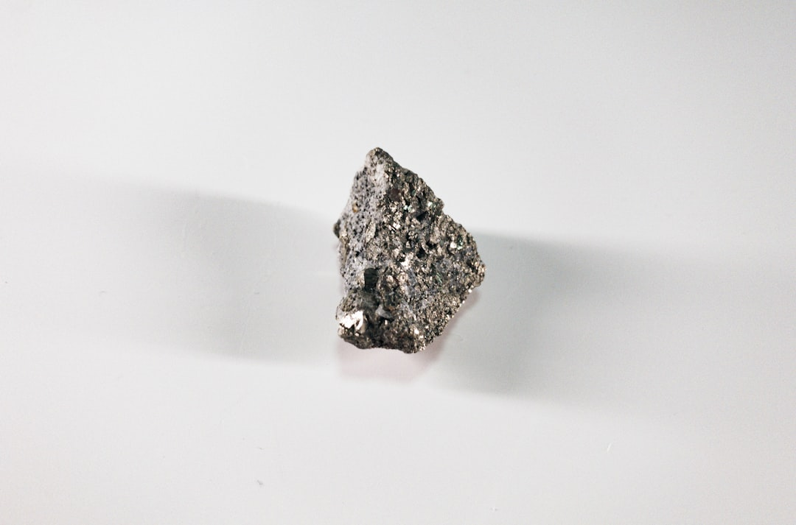

中, 일본 갈륨 풀고 게르마늄 봉쇄 유지…선별 무기화 3단계 진입

중국은 2024년 8월 갈륨·게르마늄 수출통제를 동시에 강화한 뒤, 2025년 5월 일본에 한해 갈륨 수출을 재개했다. 재개 물량은 공개되지 않았으나 일본 업계는 월 수 톤 수준으로 추산한다. 반면 게르마늄은 현재까지 전면 봉쇄가 이어지며 국제 현물가는 2023년 통제 이전 대비 약 3배 수준에서 고착화됐다.
갈륨의 경우 전 세계 공급의 95% 이상이 중국산이며, 일본 스미토모·덴카 등이 주요 수입처다. 중국이 일본에만 수출을 허용한 것은 일본의 대중 반도체 장비 수출 규제 완화 논의와 시점이 맞물린다. 이는 소재 수출을 외교 협상 카드로 분리 운용하는 '선별 지렛대 전략'이 공식화됐음을 의미한다.
한국은 갈륨 연간 수입 약 30t 중 중국산 비중이 85%를 넘는다. 게르마늄은 수입 의존도가 90%에 달하며, 국내 대체 생산은 고려아연의 2028년 양산(연 15.5t) 이전까지 공백 구간이 3년 이상 남아 있다. 갈륨은 일본 경유 우회 루트가 일시적으로 숨통을 틔워줄 수 있으나, 가격 프리미엄 5~15%가 붙는 구조다.
중국 상무부는 2025년 7월 1일 공고 제26호를 통해 이중용도 전략광물의 불법 수출 신고·단속 체계를 강화했다. 이는 우회 수출 루트에 대한 사후 추적 능력을 높이는 조치로, 일본을 경유한 제3국 재수출이 차단될 가능성이 높아졌다.
중국의 갈륨·게르마늄 이원 통제는 '가격 교란'에서 '관계국 선별 보상'으로 전략이 진화했음을 보여준다. 일본에 갈륨을 풀어줌으로써 반도체 장비 제재 완화를 유도하는 동시에, 게르마늄 봉쇄를 유지해 광섬유·적외선 광학 소재 시장의 공급 우위를 지속한다. 이 이중 구조는 한국이 단일 대응 전략으로는 대처할 수 없는 비대칭 환경을 만든다.
소재 공급자 입장에서 더 중요한 신호는 '재개'가 아니라 '선택적 재개'다. 중국이 특정국에만 공급을 허용함으로써 나머지 국가들은 해당국을 경유하는 2차 조달 루트를 모색하게 되고, 이 과정에서 중국은 우회 루트의 가격과 물량을 간접 통제한다. 한국이 일본산 갈륨을 매입할 경우 이미 중국의 가격 설정 로직 안에 편입되는 셈이다.
일본 갈륨 수입업체(스미토모금속광산, 덴카 등): 중국 재개 이후 갈륨 현물가 하락 수혜를 받으며 반도체·LED 소재 원가 경쟁력을 회복한다. 일본의 갈륨 재고 비축량이 최소 6개월치 이상으로 알려져 있어 단기 협상력도 강화된다.
고려아연: 게르마늄 봉쇄 장기화로 한국산 대체 공급망의 프리미엄 수요가 지속된다. 2028년 갈륨 양산(15.5t)과 게르마늄 회수 공정이 동시에 가동될 경우, 중국 의존도 탈피 서사의 국내 유일 플레이어로 밸류에이션 프리미엄이 유지된다.
한국 반도체·LED 소재 수요 기업(삼성전자, SK하이닉스 협력 소재사 포함): 일본 경유 갈륨 우회 루트는 가격 프리미엄 5~15% 부담이 불가피하다. 게르마늄의 경우 국내 대체 공급 이전까지 광섬유·적외선 광학 소재 원가가 2023년 대비 약 3배 수준에서 묶인다.
중국 우회 수출 브로커 네트워크: 공고 제26호 시행으로 불법·비공식 우회 루트가 단속망에 들어왔다. 기존에 동남아·중동 경유로 갈륨·게르마늄을 재수출하던 중소 무역상들의 리스크가 급격히 높아졌다.
갈륨과 게르마늄을 동일 카테고리로 묶어 대응해온 기업은 전략을 분리해야 한다. 갈륨은 일본·캐나다(미국 NGP 프로젝트)·고려아연 국산 루트를 2025~2028년 단계별로 병행 확보하는 포트폴리오 전략이 유효하다. 게르마늄은 가격 고착이 장기화될 것으로 보이므로, 광섬유용 GeCl4 대신 재활용 스크랩 회수율을 높이는 공정 내재화가 원가 방어의 현실적 선택지다.
일본산 갈륨 조달 시 공급계약서에 '원산지 재수출 금지' 조항이 포함돼 있는지 반드시 확인해야 한다. 중국 공고 제26호는 제3국 재수출에 대한 소급 추적 근거가 될 수 있어, 일본 업체와의 장기 공급계약이 법적 리스크를 내포할 수 있다.
실제 조달 현장에서는 — 갈륨 재개 소식 이후 일본 중간 무역상들이 한국 수요처에 '스팟 공급 가능'을 타진해오는 사례가 늘고 있다. 그러나 이들이 제시하는 가격은 중국 직수입 대비 8~12% 높은 수준이며, 납기 보장도 90일 이상으로 길다. 단기 스팟보다는 고려아연 양산 개시(2028) 이전 2년치 물량을 미리 묶어두는 연간 프레임 계약이 원가 안정성 측면에서 훨씬 유리하다.
이 포스팅은 쿠팡 파트너스 활동의 일환으로 수수료를 제공받습니다.